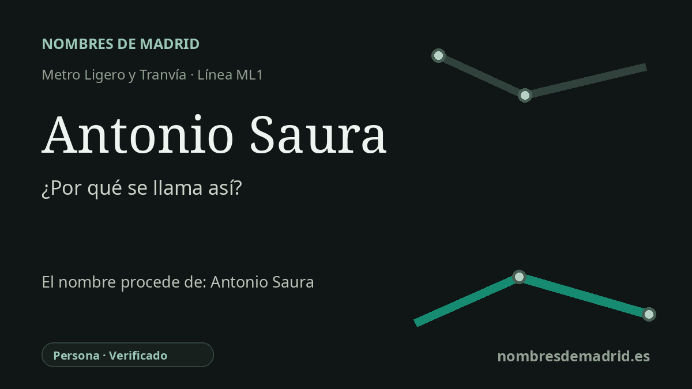

Publicado el · Investigación de Nombres de Madrid · Cómo verificamos cada origen · 7 fuentes consultadas
Respuesta rápida
La estación Antonio Saura toma su nombre de la cercana calle del Pintor Antonio Saura, dedicada a Antonio Saura Atarés, pintor y escritor esencial de la vanguardia española de posguerra. Saura cofundó El Paso en 1957 y fue una de las figuras más reconocidas del informalismo español.
La historia del nombre
La estación Antonio Saura toma su nombre público de su entorno urbano inmediato en Sanchinarro. El Consorcio Regional de Transportes de Madrid la recoge como Antonio Saura, con acceso por la calle del Príncipe Carlos, y la cartografía de transporte y municipal sitúa la calle del Pintor Antonio Saura junto al ámbito de la parada.
La persona que hay detrás de ese nombre viario es Antonio Saura Atarés, nacido en Huesca en 1930 y fallecido en Cuenca en 1998. La Real Academia de la Historia lo identifica no solo como pintor, sino también como ilustrador, escenógrafo, escultor, poeta y ensayista, un matiz importante porque su figura pública desborda la pintura.
La trayectoria artística de Saura empezó durante una larga enfermedad: una tuberculosis ósea le obligó a permanecer años en cama, y en 1947 comenzó a pintar y escribir de forma autodidacta. Tras etapas en Madrid y París, pasó de sus primeros intereses surrealistas a un lenguaje severo y gestual vinculado al informalismo y al expresionismo abstracto.
Su relación con Madrid es especialmente clara a través de El Paso, grupo que cofundó en 1957 junto a artistas como Rafael Canogar, Luis Feito y Manuel Millares. El Reina Sofía presenta El Paso como uno de los primeros movimientos de vanguardia de la España de posguerra, mientras que el Guggenheim Bilbao subraya la paleta restringida de Saura y sus series de crucifixiones, mujeres, desnudos, multitudes y retratos imaginarios.
La estación pertenece a la primera línea madrileña de metro ligero entre Pinar de Chamartín y Las Tablas, inaugurada el 24 de mayo de 2007. No consta un nombre anterior de la parada. La etimología es, por tanto, segura en cuanto a la persona homenajeada, aunque queda pendiente consultar el acuerdo municipal exacto que asignó el nombre de la calle del Pintor Antonio Saura.